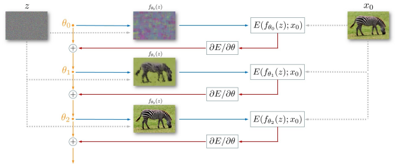
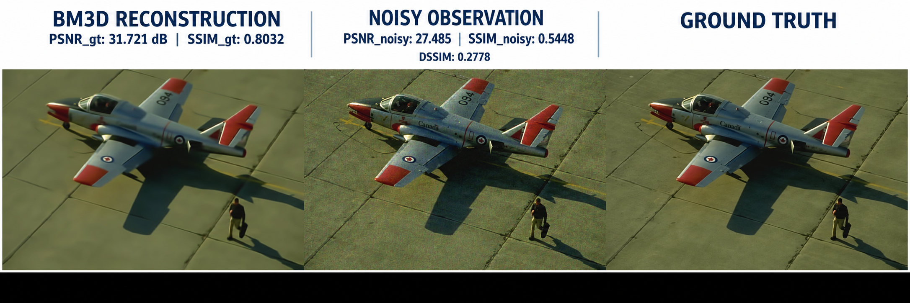
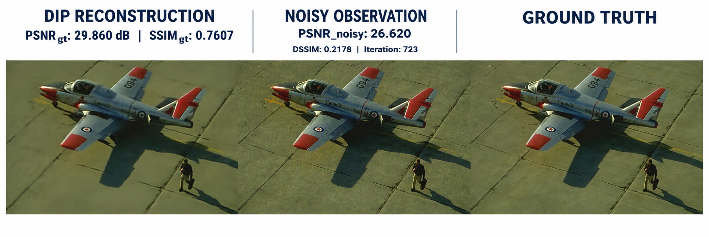
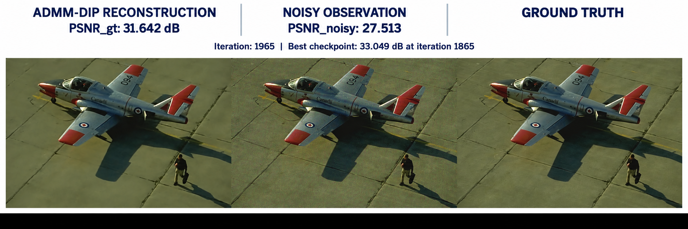
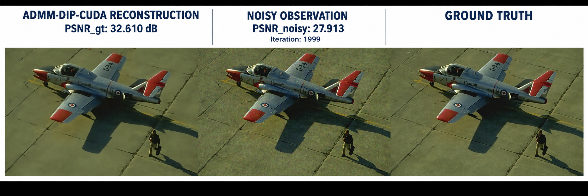
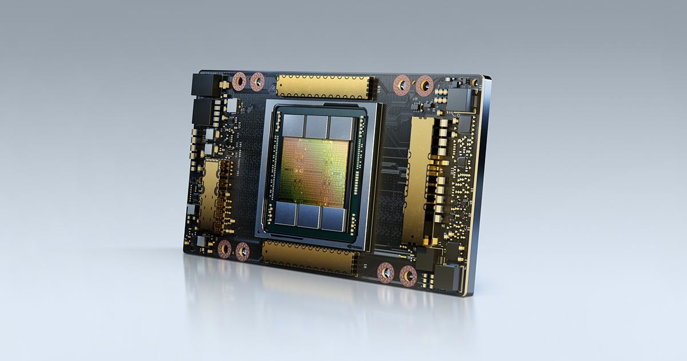
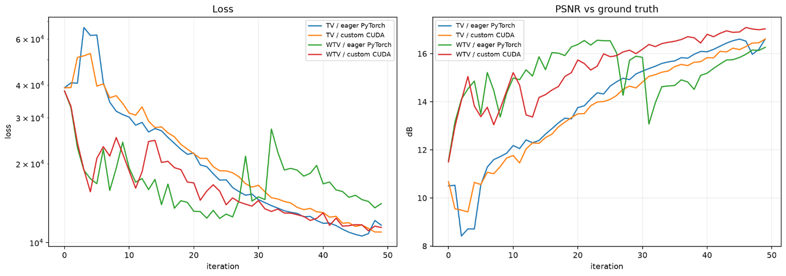
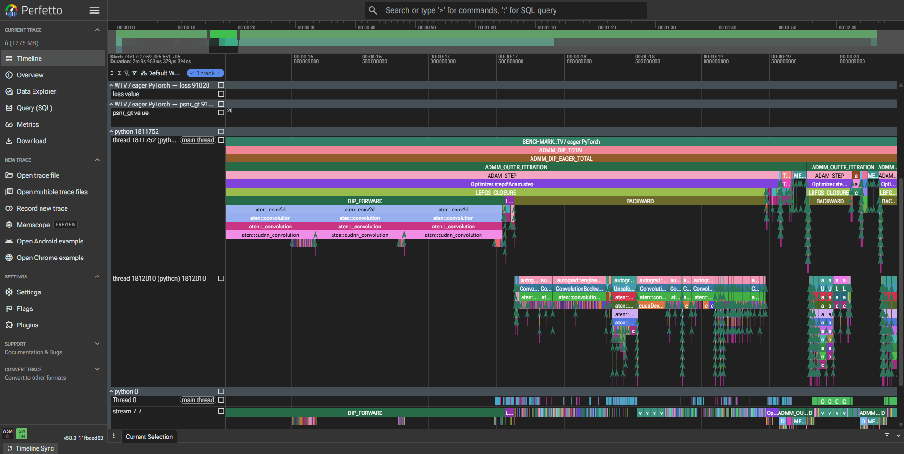

GPU-Accelerated Deep Image Prior for Image Denoising
Single-image reconstruction with Deep Image Prior, ADMM, TV/WTV regularization, and native PyTorch C++/CUDA operators—built to study both reconstruction behavior and GPU execution.

01 · Problem & motivation
Can the network architecture itself act as an image prior?
Deep Image Prior (DIP) fits an untrained convolutional network to a single noisy observation. Natural image structure is typically reconstructed before the network begins fitting noise, making optimization control and early stopping essential.
02 · Technical approach
DIP meets constrained optimization
I implemented vanilla DIP, then coupled it with ADMM—an optimization method that separates the neural reconstruction step from explicit TV/WTV regularization. Native CUDA operators cover periodic gradient, divergence, shrinkage, and dual updates, with autograd integration and a portable PyTorch fallback. I compared eager PyTorch, compiled PyTorch, and native CUDA paths, evaluated BM3D and other classical baselines, and added early stopping with best-checkpoint restoration to limit noise overfitting.
03 · Representative results
One RGB example from BSDS300
Each figure reads left to right: reconstructed output, noisy observation, and ground truth. These are representative single-image results—not dataset-wide averages or state-of-the-art claims.




| Method | Iteration | PSNRgt | PSNRnoisy | SSIMgt | SSIMnoisy | DSSIM |
|---|---|---|---|---|---|---|
| BM3D | — | 31.721 dB | 27.485 | 0.8032 | 0.5448 | 0.2778 |
| DIP | 723 | 29.860 dB | 26.620 | 0.7607 | — | 0.2178 |
| ADMM-DIP | 1965 | 31.642 dB best: 33.049 | 27.513 | — | — | — |
| CUDA ADMM-DIP | 1999 | 32.610 dB | 27.913 | — | — | — |
04 · CUDA acceleration
A 9.52× faster periodic-gradient operator
The benchmark compares the custom CUDA operator with the FFT implementation on a real DIP output of shape 1 × 3 × 320 × 480, using float32 on an NVIDIA A100. The result measures 100 operator calls.
70.728 → 8.105 msProfiled self-CUDA time

05 · Numerical consistency
Speed without changing the operator
The custom kernel stays closely aligned with the reference FFT computation. CUDA’s demonstrated contribution here is computational acceleration, not improved denoising quality.
06 · Profiling & performance analysis
From convergence curves to kernel-level traces
PyTorch Profiler and Perfetto made bottlenecks observable across Python, autograd, and CUDA rather than relying on wall-clock timing alone.




.jpg)